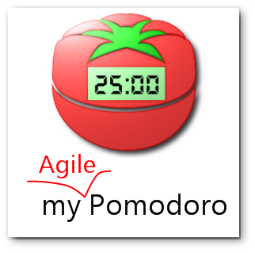

myAgilePomodoro
Agile Time Management Freeware
myAgilePomodoro is a time management software that brings you the best of two worlds: Agile's most common practices and the Pomodoro Technique®.
mAP is a free open-source, GPLv3, Java 6+, 32/64-bit, utf-8, multilingual,
standalone and portable application (no installer).
Main features
mAP is flexible: use it as a Agile software, a Pomodoro timer or a simple ToDo list.
mAP is meant for individuals and small size teams in war rooms.
- Pomodoro: short / long breaks, interruptions / unplanned tasks, overestimations...
- Pomodoro: full implementation of the technique + Sub-tasking
- Import / Export: CSV, Excel 2003/07, XML, Google Drive
- Agile: backlog management, story points, iteration...
- Timer: ticking / ringing, mute, pause, resizing...
- Charts: burn-down / up, target, scope, guide
- Database: local SQLite / remote MySQL
- System tray: progress icon, messages
- Multilingual: English, French, Italian
- Look and feel: themes
Screenshots
Release
Timer
Charts
Backlog
Preferences
Pomodoro Technique®'s rules* vs mAP
* as per the official book of the Pomodoro Technique®.Although mAP implements all Pomodoro Technique®'s rules, it is flexible in many ways.
A Pomodoro Consists of 25 minutes Plus a Five-Minute Break
Configurable.
mAP allows shortening / lengthening pomodoros and short breaks.
mAP allows stopping automatically the timer at the end of pomodoros (workflow interruption).
After Every Four Pomodoros Comes a 15-30 Minute Break.
Configurable.
mAP allows shortening / lengthening long breaks.
mAP allows restarting a Set after stopping the timer.
The Pomodoro Is Indivisible. There are no half or quarter Pomodoros.
mAP allows voiding and shortening pomodoros.
If a Pomodoro Begins, It Has to Ring:
--> If a Pomodoro is interrupted definitively – i.e. the interruption isn't handled – it's considered void, never begun, and it can't be recorded with an X.
--> If an activity is completed once a Pomodoro has already begun, continue reviewing the same activity until the Pomodoro rings.
Ringing and ticking sounds are customizable and possible to disable.
--> mAP allows pausing pomodoros' progression for later use.
--> mAP allows shortening pomodoros.
Protect the Pomodoro. Inform effectively, negotiate quickly to reschedule the interruption, call back the person who interrupted you as agreed.
mAP allows creating unplanned tasks and subtasks at any time and internal and external interruption tasks and subtasks during pomodoros.
If It Lasts More Than 5-7 Pomodoros, Break It Down. Complex activities should be divided into several activities.
mAP allows duplicating tasks and creating subtasks.
If It Lasts Less Than One Pomodoro, Add It Up. Simple tasks can be combined.
mAP allows merging tasks and subtasks.
mAP allows starting tasks and subtasks with no estimation.
Results Are Achieved Pomodoro after Pomodoro.
mAP measures accuracy and analyses errors (diff).
mAP allows creating burn-up and burndown charts.
The Next Pomodoro Will Go Better.
Just stick to mAP ;-)
Sub-tasking rules vs mAP
mAP adds two new rules to support sub-tasking.
We suggest those rules to be added to the Pomodoro Technique®'s specification.